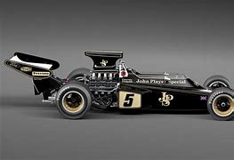
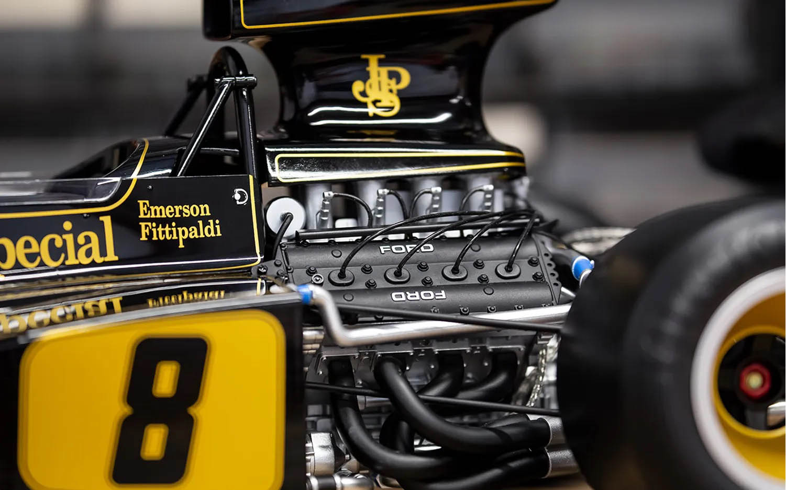
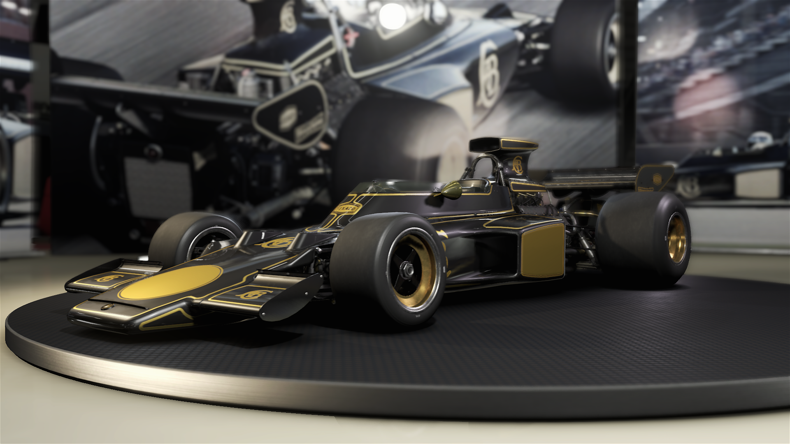
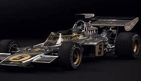

El Lotus 72D lucía la icónica decoración negra con dorado de John Player Special, uno de los diseños más recordados y queridos en la historia de la Fórmula 1.
Estaba equipado con un motor Ford Cosworth DFV V8 atmosférico, a 90°, con una cilindrada de 2,993 cc (3.0 L), que entregaba aproximadamente 450 a 470 caballos de fuerza a 10,000 rpm. El par motor rondaba los 330 Nm. La transmisión era manual Hewland FGA 400 de 5 velocidades, con tracción trasera (RWD).
   